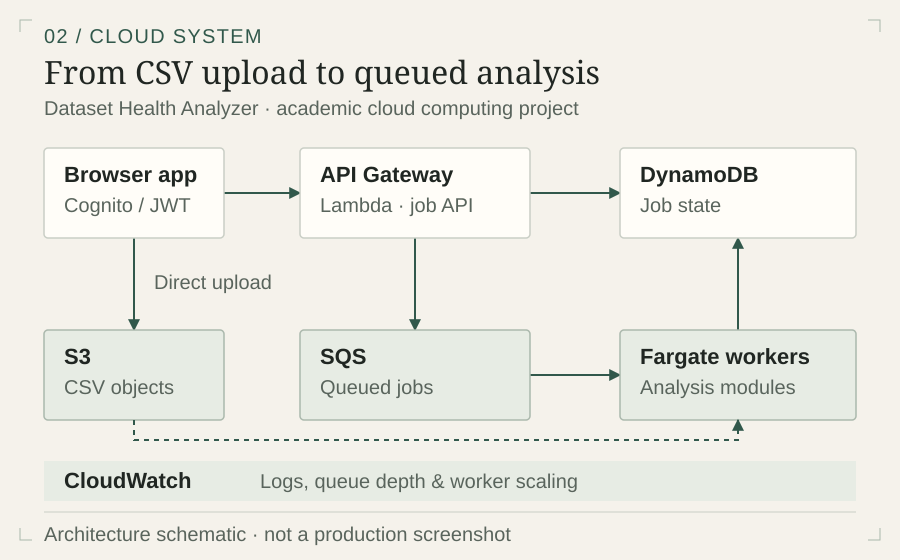
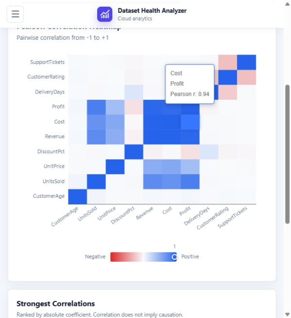
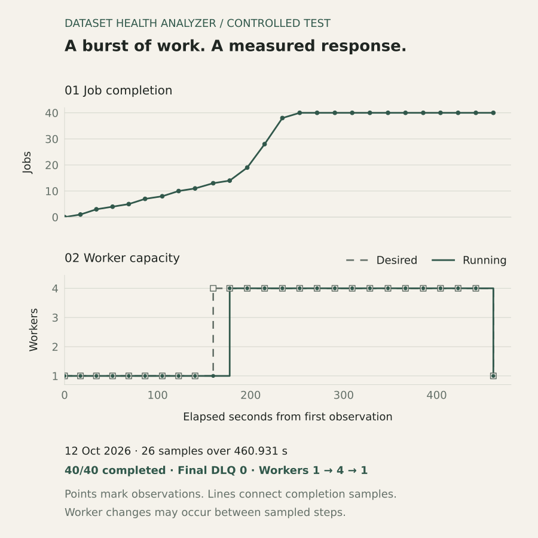

01 / Context
The project.
An application for authenticated, browser-based CSV profiling. It builds on existing cloud infrastructure, with a standalone analysis workflow, worker service and reporting interface.
This public demo is a static React application on GitHub Pages. CSV analysis runs locally in the browser. The original AWS queue, workers and recorded load experiment are separate.
02 / Problem
What needed solving.
CSV profiling can take longer than a normal browser request. Uploading data, authorizing a user, tracking a job and running analysis need separate boundaries so the user can see progress while workers handle the compute.
03 / My contribution
My part in the work.
I extended existing cloud infrastructure with a CSV analysis workflow, connecting the authenticated control plane, queued workers and reporting interface.
04 / Architecture & implementation
How the pieces work.
The React frontend uses Cognito authentication and uploads directly to private S3 storage. API Gateway and Lambda verify ownership and upload state, create DynamoDB job records and enqueue SQS messages. Fargate workers claim queued jobs, read the CSV, write private analysis results and update job state. CloudWatch-backed scaling adjusts worker capacity.


05 / Engineering trade-offs
Why these choices.
Keep uploads off the control plane
Upload directly to private S3 storage and verify the object before queuing work. This avoids large request bodies but requires ownership, size and completion checks at the boundary.
Track jobs independently of workers
Conditional DynamoDB transitions guard claims and terminal state. That makes progress visible, but crash recovery still needs a reconciliation mechanism.
Use queues to absorb a burst
SQS separates job arrival from worker execution and supports backlog-driven scaling. Minimum capacity is one worker; scale-to-zero and cold-start behaviour remain separate design questions.
06 / Evidence & verification
Results and verification.
The archived 12 October 2026 AWS experiment completed all 40 jobs, with no failed or cancelled jobs and an empty final dead-letter queue. Recorded worker counts rose from one to four and returned to one. Each job used a 2,886,027-byte generated CSV containing 80,001 data rows, with all six analysis modules selected. The original CSV/JSON records were checked for this refinement; the AWS experiment was not rerun.

| Recorded outcome | Result |
|---|---|
| Jobs completed | 40 / 40 |
| Failed / cancelled | 0 / 0 |
| Running workers | 1 → 4 → 1 |
| Final dead-letter queue | 0 |
| Samples / window | 26 / 460.931 seconds |
- The original measured deployment, 17 October UI captures and 24 October source corrections are different snapshots.
- The 24 October correctness fixes were local and were not deployed to the measured AWS baseline.
- Six analysis modules cover profiling, completeness, duplicates, numeric statistics, IQR outliers and correlation.
- The public browser demo was checked on 19 November 2026: all eight report views, JSON export and a small synthetic CSV analysis worked. The demo computes locally and does not reproduce the archived AWS load experiment.
Original implementation source, archived 12 October experiment CSV/JSON and unaltered 17 October interface captures. Only aggregate measurements and safe UI views are published.
07 / Limitations
Limits and next steps.
The source uses bounded in-memory CSV analysis rather than unlimited streaming. A worker crash after claiming a job can leave it RUNNING; SQS redrive does not repair that state automatically. DynamoDB transitions and SQS submission are not atomic, so exactly-once processing is not claimed. I would add recovery/reconciliation for abandoned jobs and test that path in a newly deployed, versioned environment. The public demo provides a separate browser-local version with limits of 1 MiB, 5,000 rows and 30 columns. It does not exercise cloud authentication, queueing or autoscaling.